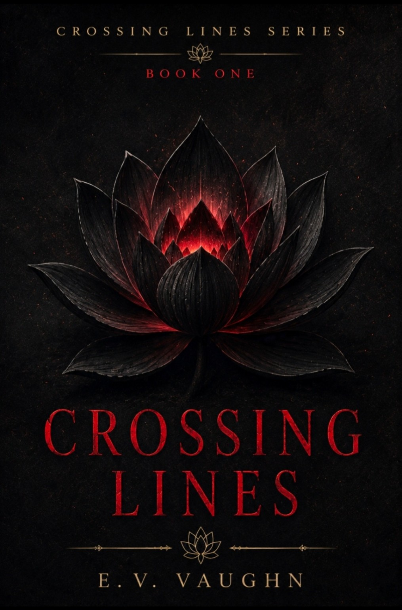
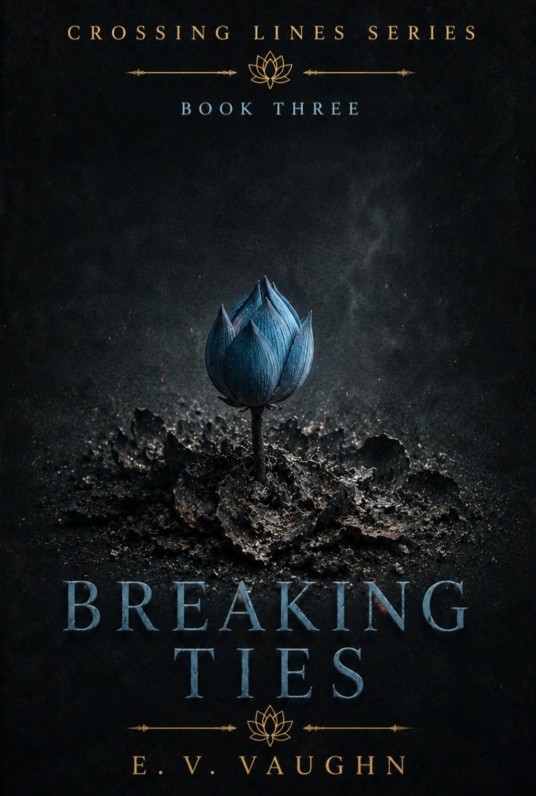

Book One
Crossing Lines
Where it begins.
Buy on AmazonBeautiful stories. Brutal endings.
Love. Loyalty. Betrayal. Enter a world of impossible choices, dangerous devotion, and stories that stay with you long after the final page.
Enter the StoriesThree books. One world. Some lines can never be uncrossed.

Book One
Where it begins.
Buy on Amazon
Book Two
Everything catches fire.
Buy on Amazon
Book Three
The final chapter.
Buy on Amazon
E.V. Vaughn writes emotionally intense fiction about love, loyalty, betrayal, and the impossible choices that define us.
Her Crossing Lines trilogy explores a world where devotion is dangerous, trust is earned, and happy endings are never guaranteed.
A new story about what it means to truly live when time is running out.
Explore the Crossing Lines trilogy above and return for news about upcoming releases from E.V. Vaughn.
Explore the Books